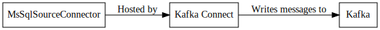

MsSqlSourceConnector¶
The Microsoft SQL Server connector utilizes Change Tracking to identify changes. There are two ways to read the changes from the source system as they are generated. Change Data Capture is a feature that is only available on SQL Server Enterprise and Developer editions. Change Tracking is a lightweight solution that will efficiently find rows that have changed. If the rows are modified in quick succession all of the changes might not be found. The latest version of the change will be returned.
Configuration¶
General¶
schema.key.name.format¶
Format used to generate the name for the key schema. The following template properties are available for string replacement. ${databaseName}, ${schemaName}, ${tableName}, ${namespace}
Importance: High
Type: String
Default Value: ${namespace}.${tableName}Key
schema.namespace.format¶
The namespace for the schemas generated by the connector. The following template properties are available for string replacement. ${databaseName}, ${schemaName}, ${tableName}, ${namespace}
Importance: High
Type: String
Default Value: com.example.data.${databaseName}
schema.value.name.format¶
Format used to generate the name for the value schema. The following template properties are available for string replacement. ${databaseName}, ${schemaName}, ${tableName}, ${namespace}
Importance: High
Type: String
Default Value: ${namespace}.${tableName}Value
topicFormat.format¶
The topicFormat to write the data to.
Importance: High
Type: String
Default Value: ${databaseName}.${tableName}
change.tracking.tables¶
The tables in the source database to monitor for changes. If no tables are specified the [sys].[change_tracking_tables] view is queried for all of the available tables with change tracking enabled.
Importance: Medium
Type: List
Default Value: []
jdbc.pool.max.idle¶
The maximum number of idle CONNECTIONS in the connection pool.
Importance: Medium
Type: Int
Default Value: 10
jdbc.pool.max.total¶
The maximum number of CONNECTIONS for the connection pool to open. If a number greater than this value is requested, the caller will block waiting for a connection to be returned.
Importance: Medium
Type: Int
Default Value: 30
jdbc.pool.min.idle¶
The minimum number of idle CONNECTIONS in the connection pool.
Importance: Medium
Type: Int
Default Value: 3
backoff.time.ms¶
The number of milliseconds to wait when no records are returned.
Importance: Low
Type: Int
Default Value: 1000
Validator: [50,…]
batch.size¶
The number of records to return in a batch.
Importance: Low
Type: Int
Default Value: 512
Validator: [1,…]
multi.subnet.failover¶
Use High Availability MultiSubnetFailover (true/false)
Importance: Low
Type: Boolean
Default Value: false
schema.cache.ms¶
The number of milliseconds to cache schema metadata in memory.
Importance: Low
Type: Int
Default Value: 300000
Validator: [60000,…]
schema.caseformat.column.name¶
This setting is used to control how the column names are cased when the resulting schemas are generated.
Importance: Low
Type: String
Default Value: NONE
Validator: ValidEnum{enum=CaseFormat, allowed=[LOWER_HYPHEN, LOWER_UNDERSCORE, LOWER_CAMEL, LOWER, UPPER_CAMEL, UPPER_UNDERSCORE, UPPER, NONE]}
schema.caseformat.database.name¶
This setting is used to control how the ${databaseName} variable is cased when it is passed to the formatters defined in the schema.namespace.format, schema.key.name.format, schema.value.name.format, topicFormat.format settings. This allows you to control the naming applied to these properties. For example this can be used to take a database name of USER_TRACKING to a more java like case of userTracking or all lowercase usertracking.
Importance: Low
Type: String
Default Value: NONE
Validator: ValidEnum{enum=CaseFormat, allowed=[LOWER_HYPHEN, LOWER_UNDERSCORE, LOWER_CAMEL, LOWER, UPPER_CAMEL, UPPER_UNDERSCORE, UPPER, NONE]}
schema.caseformat.input¶
The naming convention used by the database format. This is used to define the source naming convention used by the other schema.caseformat.* properties.
Importance: Low
Type: String
Default Value: UPPER_UNDERSCORE
Validator: ValidEnum{enum=CaseFormat, allowed=[LOWER_HYPHEN, LOWER_UNDERSCORE, LOWER_CAMEL, UPPER_CAMEL, UPPER_UNDERSCORE]}
schema.caseformat.schema.name¶
This setting is used to control how the ${schemaName} variable is cased when it is passed to the formatters defined in the schema.namespace.format, schema.key.name.format, schema.value.name.format, topicFormat.format settings. This allows you to control the naming applied to these properties. For example this can be used to take a schema name of SCOTT to a more java like case of Scott or all lowercase scott.
Importance: Low
Type: String
Default Value: NONE
Validator: ValidEnum{enum=CaseFormat, allowed=[LOWER_HYPHEN, LOWER_UNDERSCORE, LOWER_CAMEL, LOWER, UPPER_CAMEL, UPPER_UNDERSCORE, UPPER, NONE]}
schema.caseformat.table.name¶
This setting is used to control how the ${tableName} variable is cased when it is passed to the formatters defined in the schema.namespace.format, schema.key.name.format, schema.value.name.format, topicFormat.format settings. This allows you to control the naming applied to these properties. For example this can be used to take a table name of USER_SETTING to a more java like case of UserSetting or all lowercase usersetting.
Importance: Low
Type: String
Default Value: NONE
Validator: ValidEnum{enum=CaseFormat, allowed=[LOWER_HYPHEN, LOWER_UNDERSCORE, LOWER_CAMEL, LOWER, UPPER_CAMEL, UPPER_UNDERSCORE, UPPER, NONE]}
uncomitted.record.max¶
The maximum number of records to allow in the deque. Once this limit is reached the record deque will block to prevent running out of memory.
Importance: Low
Type: Int
Default Value: 50000
Validator: [100,…]
uncomitted.record.timeout.ms¶
The maximum amount of time to wait when writing to the deque before throwing a timeout exception.
Importance: Low
Type: Long
Default Value: 300000
Validator: [100,…]
Examples¶
Property based example¶
This configuration is used typically along with standalone mode.
name=MsSqlSourceConnector1
connector.class=com.github.jcustenborder.kafka.connect.cdc.mssql.MsSqlSourceConnector
tasks.max=1
initial.database=< Required Configuration >
password=< Required Configuration >
server.name=< Required Configuration >
server.port=< Required Configuration >
username=< Required Configuration >
Rest based example¶
This configuration is used typically along with distributed mode. Write the following json to connector.json, configure all of the required values, and use the command below to post the configuration to one the distributed connect worker(s). Check here for more information about the Kafka Connect REST Interface.
{
"config" : {
"name" : "MsSqlSourceConnector1",
"connector.class" : "com.github.jcustenborder.kafka.connect.cdc.mssql.MsSqlSourceConnector",
"tasks.max" : "1",
"initial.database" : "< Required Configuration >",
"password" : "< Required Configuration >",
"server.name" : "< Required Configuration >",
"server.port" : "< Required Configuration >",
"username" : "< Required Configuration >"
}
}
Use curl to post the configuration to one of the Kafka Connect Workers. Change http://localhost:8083/ the the endpoint of one of your Kafka Connect worker(s).
curl -s -X POST -H 'Content-Type: application/json' --data @connector.json http://localhost:8083/connectors
curl -s -X PUT -H 'Content-Type: application/json' --data @connector.json http://localhost:8083/connectors/MsSqlSourceConnector1/config